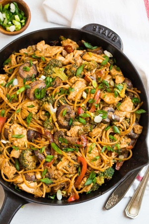

Stir fry noodles
Recipes

Description
These stir fry noodles are loaded with chicken and colorful vegetables with a savory sauce. A remake of the take out favorite that tastes even better than what you would get at a restaurant!
Ingredients
- 1 tablespoon vegetable oil
- 3/4 pound boneless skinless chicken breast
- 10 ounces fresh egg noodles
- 3/4 cup shiitake mushrooms
- 1/2 cup shredded carrots
- 1/4 cup thinly sliced celery
- 1/2 red bell pepper
- 1 teaspoon garlic
- 1/2 teaspoon ginger
- 1/4 cup chicken broth
- 2 tablespoons hoisin sauce
- 2 tablespoons soy sauce
- 1 tablespoon sesame oil
- 2 teaspoons cornstarch
- 1/4 cup sliced green onion tops
- salt and pepper to taste
Instructions
- Preheat the vegetable oil in a large pan over medium high heat.
- Add the chicken and season with salt and pepper to taste. Cook for 3-4 minutes per side or until golden brown.
- Remove the chicken from the pan. Add the mushrooms, carrots, celery and red bell pepper to the pan and cook for 4-5 minutes or until just softened.
- Add the garlic and ginger and cook for 30 seconds.
- Add the noodles to the pan, along with the chicken. Toss to combine.
- In a small bowl, whisk together the chicken broth, hoisin sauce, soy sauce, sesame oil and cornstarch.
- Pour the sauce into the pan and bring to a simmer. Cook for 1 minute or until sauce is thickened. Sprinkle with green onions, then serve.